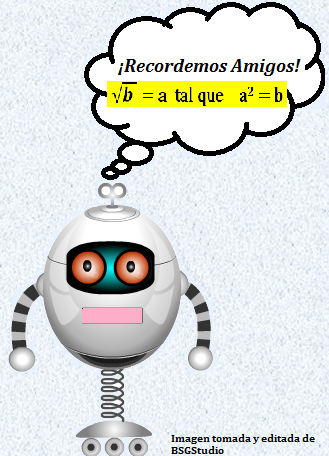

Potenciación:
Potenciación es una expresión matemática que incluye dos términos denominados: Base a y exponente n.
a: Se repite el mismo numero.
n: Es el exponente es el numero de veces que se repite y el resultado se llama potencia.
Ejemplo: 
Propiedades de Potenciación:
- Potencia de exponente 0 : todo numero elevado a la 0 da 1
- Ejemplo: 40 = 1 y 180 = 1
- Potencia de exponente 1: Todo numero elevado a la 1 da el mismo numero
- Ejemplo: 51 = 5 y 241 = 24
- Producto de potencia con igual base: El producto de dos o más potencias de igual base «a» es igual a la potencia de dicha base «a» y exponente igual a la suma de los correspondientes exponentes (la misma base y se suman los exponentes)
- Ejemplo:

- Cociente de potencia con igual de base: La división de dos potencias de igual base a es igual a la potencia de base a y exponente igual a la resta de los exponentes respectivos (la misma base y se restan los exponentes)
- Ejemplo:
 Osea 28 ⁄ 24 = 28 − 4 = 24 = 16
Osea 28 ⁄ 24 = 28 − 4 = 24 = 16
- Potencia de una potencia: La potencia de una potencia de base a es igual a la potencia de base a elevada a la multiplicación de ambos exponentes (la misma base y se multiplican los exponentes):
- Ejemplo:
 Osea (63)4 = 63.4 = 612
Osea (63)4 = 63.4 = 612
- Exponente negativo: La potencia de un número entero con exponente negativo es igual al inverso del número elevado a exponente positivo.
- Ejemplo:
 Osea se convierte en una fracción 2− 4 = 1/24 = 1/(2)(2)(2)(2)=1/16
Osea se convierte en una fracción 2− 4 = 1/24 = 1/(2)(2)(2)(2)=1/16 - Si es con número negativo (-2)− 4 = 1/(-2)4 =1/(-2)(-2)(-2)(-2)=1/16
- Si no tiene paréntesis -2− 4 = 1/24 = -1/16
- Producto de potencia con igual exponente: Es otra potencia con el mismo exponente y cuya base es el producto de las bases.
- Ejemplo: 68 · 58 = 308 y 23 · 43 = 83
Potencias de Número Enteros:
- Las potencias de exponente par son siempre positivas
 Osea 26 = 64 y (−2)6 = 64
Osea 26 = 64 y (−2)6 = 64
- Las potencias de exponente impar tiene el mismo signo de la base.
 Osea 23 = 8 y (−2)3 = (-2) (-2) (-2) = −8
Osea 23 = 8 y (−2)3 = (-2) (-2) (-2) = −8
- Las potencias de exponente sin paréntesis no afecta el signo en el resultado.
- Ejemplo: -52 = (5) (5)= -25
Potencia de Fracciones:
- Una fracción elevada a un exponente: Se multiplica la fracción por si misma, la cantidad de veces que este elevada.
- Ejemplo: (2/3)3= (2/3)(2/3)(2/3)=8/27
- Potencia de una fracción de exponente negativo -1: Todo numero elevado a la -1 se invierte la fracción.
- Ejemplo: (4/9)-1= 9/4 y (1/5)-1= 5/1= 5
- Potencia de una fracción de exponente negativo: Se invierte la fracción y se opera.
- Ejemplo: (5/3)-2=(3/5)2 =32/52= 9/25
Radicación:
Radicación, es encontrar la raíz de un número, la cual elevada a la correspondiente potencia, de como resultado el número inicial.
Así, por ejemplo, cuando multiplicamos 2 x 2 y obtenemos el producto 4, decimos que 2 es la raíz de 4, donde en este caso se ha multiplicado al número 2 una vez por sí mismo, es decir, lo hemos elevado al cuadrado (²).

Propiedades de la Radicación:
- Raíz de un producto: La raíz de una multiplicación es igual al producto de las raíces de los factores.
- Ejemplo:

- Raíz de un cociente: La raíz de una división es igual al cociente de las raíces del dividendo y del divisor.
- Ejemplo:
 =
= 
- Potencia de una Raíz: Para elevar una raíz a una potencia se eleva el radicando a esta potencia.
- Ejemplo:
 (5√2)4 = (5√24) = (5√16)
(5√2)4 = (5√24) = (5√16)
- Raíz de una raíz: La raíz de una raíz da como resultado otra raíz del mismo radicando y de índice igual al producto de dos índices.
- Ejemplo:
![\sqrt[9]{\sqrt[3]{5}}](https://upload.wikimedia.org/math/e/c/c/ecccb85a5a8ea3da5c9db742f2f8cd8a.png) =
= ![\sqrt[27]{5}.](https://upload.wikimedia.org/math/6/0/4/60421728786d19fa3114266ce32140e2.png)
Signos de Radicación:
Para calcular el signo de toda raíz debemos pensar en la operación contraria a la de la potenciación.
-
La raíz de cualquier número positivo o negativo elevado a exponente impar, va a tener el mismo signo que el radicando.
-
Ejemplo:
 ³√8 = 2 y ³√-8 = -2 Porque 2³=8 y (-2³)=-8
³√8 = 2 y ³√-8 = -2 Porque 2³=8 y (-2³)=-8
- La raíz par de un entero positivo tiene dos resultados; uno positivo y otro negativo.
- Ejemplo: ²
 √4 = ± 2 Porque 2²=4 y (-2²)=4
√4 = ± 2 Porque 2²=4 y (-2²)=4
Aprendamos jugando